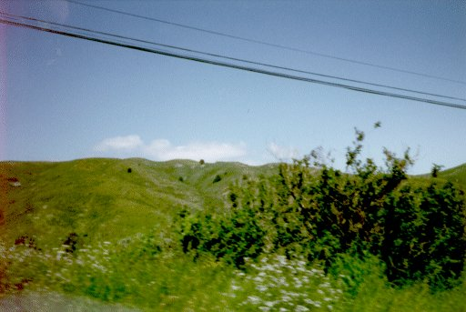

mmm... i love the yellow lines down the middle of the road.
i took these pictures when i went to california. some of the pictures were cool, so here're the best ones. i had camera problems and the film was exposed to light, unfortunately.
this is a californian stop sign. it looks similar to most minnesotan
stop signs. however, californians seem to be a bit lax on obeying them.
these are californian power lines in the middle of nowhere. i can't
imagine why the middle of nowhere would need so many power lines, but
there seem to be a lot of them.

here are some beautiful californian hills. i also got a few of the
aformentioned power lines in the picture.
mmm... i love the yellow lines down the middle of the road.
we were driving kinda fast when i took this picture. i think this was
taken on the same road as the yellow lines above.
this is a very cool panorama of the ocean. the colors didn't
scan very well, though.
you might as well go back to my home page now.
i love the view source command and you should, too.
copyright lithis, 2000–2005.